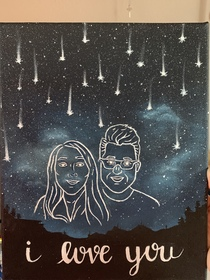

Anel Lozano
I am currently a second-year undergraduate student studying for a psychology degree at the University of California, Riverside. In school, I am involved in a couple of community service clubs including the American Red Cross, M.E.CH.a, and Make A Wish. In these organizations, we work to provide services for the community whether that be helping kids in hospitals realize their dreams, cleaning public spaces, distributing food, fundraising, or getting involved in social issues regarding the wellbeing of the people.
Additionally, I have experience working with kids, ranging from toddlers to young teenagers. Throughout the years I have tutored kids in different school subjects including math, English, science, and the arts. I am responsible and capable of taking care of kids for long periods of time, ensuring that they are safe, entertained, and happy. As a result, I have developed many skills, some of which are patience, quick thinking, creativity, and problem-solving. For a brief period, I also spent time in an elderly home as a volunteer in the activity section of their day. During this time I socialized and assisted the elderly as we played games and had conversations about their day. A skill that has come to be very useful in all of my experiences is my ability to speak two languages, English and Spanish. I had to tutor a kid that spoke little English and being able to speak Spanish facilitated my ability to communicate with them. In the elderly home, I was able to translate important information from patients to their doctors regarding their physical health. As workspaces are fortunately becoming more diverse, it is useful that we have the skills necessary to meet the needs of different people.
My main job which has been consistent for the past of years is being a freelance artist. I work with people to create custom pieces for special occasions using different mediums to create special gifts like shoes, clothes, water bottles, and regular canvas paintings. Through this job, I have been able to express my creative side while being able to share the joy of art with my clients.
Experience
Tutor
• patiently teach students the materials
• aid in subject like math, science, englsih, and art
• formualte different methods of teaching
Babysitter
• responsible for the health and safety of children
• think of creative ways to enterain and engage with kids
• deal and manage a variety of emotions quickly and with kindness
• perform household task while simultaneously watching and caring for kids
Artist
• creatively design artwork
• use different mediums and methods for pieces
• work with clients to mutuallly decide on an appropriate art design
• manage time efficently to finish final product by date of delivery
Education
UC Riverside
Portfolio
